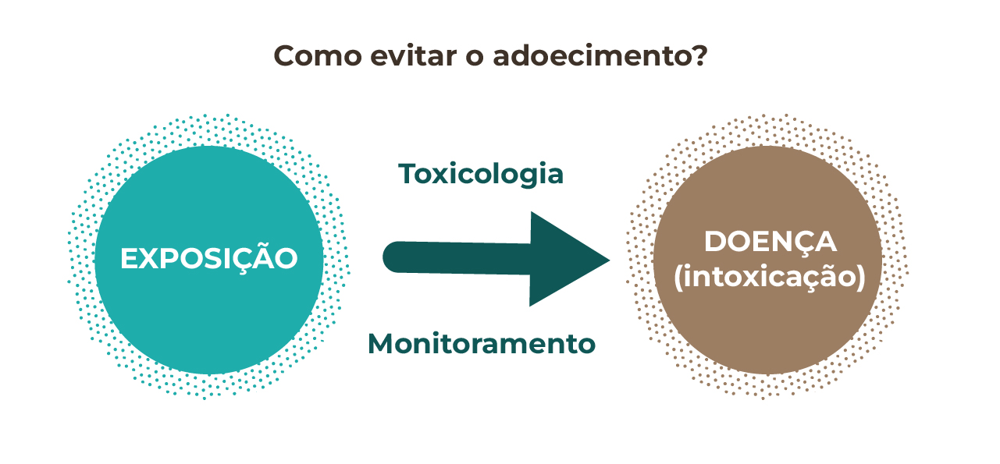
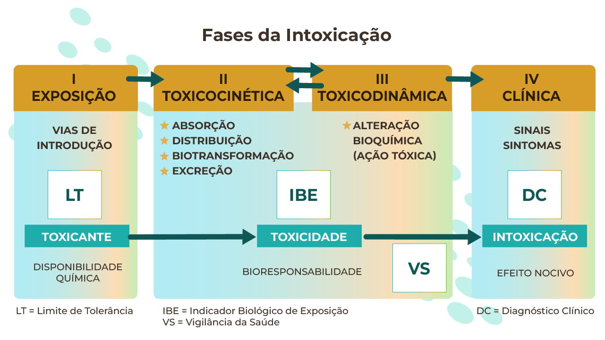
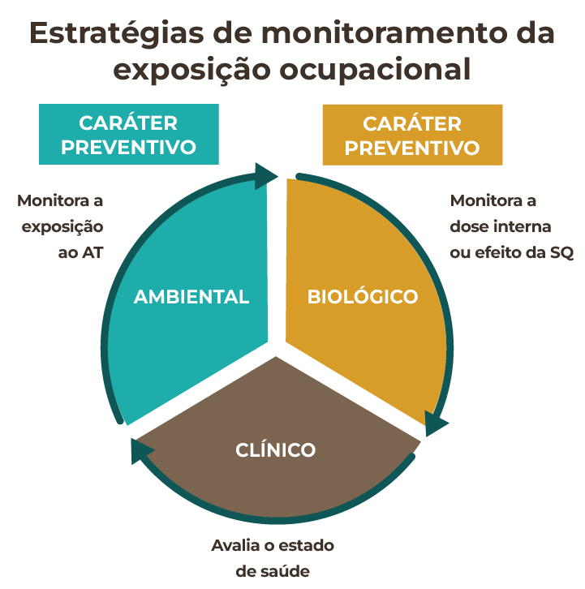

MÓDULO 2 | AULA 5 Toxicologia Ocupacional
Monitoramento da exposição ocupacional
A presença de SQ potencialmente tóxicas no ambiente de trabalho determina que a exposição seja avaliada sistematicamente, já que os riscos químicos podem aumentar a incidência e a prevalência de algumas doenças.
Essa avaliação da exposição deve ser feita de forma contínua e repetitiva, ou seja, isso configura um monitoramento da exposição, uma atividade desenvolvida ao longo do tempo de forma regular e organizada. Isso permite a:
- Avaliação sistemática da exposição a agentes tóxicos;
- Avaliação do processo de trabalho e controle de fontes emissoras de poluição;
- Implantação de medidas corretivas, sempre que se façam necessárias, relacionadas à saúde;
Risco = Perigo x Exposição (R = P X E)
O risco é diretamente proporcional ao perigo de alguns agentes tóxicos e a exposição, ou seja, quanto maior for o perigo de um produto químico (característica dada pela sua toxicidade) e quanto maior for a dose/concentração, frequência e duração da exposição, maior o risco.
Neste sentido, o monitoramento da exposição pode diminuir diretamente o risco, pois influencia na sua redução de seus indutores. Isso ocorre a partir dos dados/informações obtidos no processo de avaliação, e com a subsequente implantação de medidas de segurança e melhorias do processo de trabalho, e, até mesmo, com a substituição de substâncias perigosas (↑Toxicidade), por outras de menor toxicidade, reduzindo ainda mais os riscos.
Ainda sobre riscos químicos presentes no ambiente de trabalho, é importante destacar que:
- O risco é dinâmico, ele pode mudar ao longo do tempo, conforme ocorrem mudanças no ambiente de trabalho, equipamentos de proteção ou de pessoas;
- Mesmo algo pouco perigoso, sob exposição intensa, pode ter alto risco;
- Risco zero não existe.
Exemplo
Caso Césio-137 (Goiânia, 1987)
O Césio-137 é uma substância de altíssimo perigo (toxicidade). Quando moradores encontraram um equipamento radioterápico abandonado e abriram sua cápsula, houve exposição direta ao pó radioativo. O material foi manuseado, levado para casa e compartilhado com outras pessoas, aumentando a frequência e duração da exposição. Como o perigo era muito elevado e a exposição foi intensa e prolongada, o risco tornou-se extremo, resultando em graves intoxicações e mortes. O caso demonstra que quanto maior o perigo e a exposição, maior o risco, e reforça a importância de controles adequados para evitar acidentes.
Monitorar para não intoxicar
A intoxicação de um trabalhador reflete a manifestação dos efeitos tóxicos decorrentes da exposição. Ela pode ser de dois tipos: aguda e crônica.
A intoxicação aguda é caracterizada pela exposição a uma quantidade elevada de determinado AT em um curto espaço de tempo, gerando um quadro clínico de intoxicação imediata.
A intoxicação crônica é aquela que ocorre pela exposição a uma pequena quantidade (baixa dose) de um AT por um longo tempo, ou seja, anos ou décadas, representando uma toxicidade acumulativa. Cânceres ocupacionais, como a leucemia mieloide aguda e o mesotelioma, causados pela exposição ao benzeno e amianto, respectivamente, ou a doença saturnismo, causada pelo chumbo, são exemplos de doenças geradas pela intoxicação crônica a AT presentes no ambiente de trabalho.
Em casos de acidentes envolvendo vazamentos de SQ, esse tipo de intoxicação é caracterizada como aguda. Ela é de alto risco, pois coloca o indivíduo em contato com uma grande quantidade de um AT, em um curto espaço de tempo. Porém, no mundo atual esses casos são menos frequentes, dados os avanços no campo da Engenharia de Segurança do Trabalho, mas não deixam de ser importantes.
Pequenos vazamentos de gás (emissões fugitivas) em plantas industriais, por exemplo, em frigoríficos, siderúrgicas e refinarias de petróleo, podem gerar essas intoxicações graves, com morte imediata, e ainda hoje ocorrem pelo Brasil e pelo mundo afora, sem que sejam trazidas a público, ou mesmo notificadas nos sistemas de informação e vigilância adequados.
Leia a matéria “Acidentes com amônia atingem novo recorde no Brasil em 2025”.
Eventos como o rompimento das barragens de rejeitos do Fundão, em Mariana (novembro/2015), e da barragem da Mina Córrego do Feijão, em Brumadinho (janeiro/2019), ambos no estado de MG, são exemplos recentes de desastres ambientais com intoxicações agudas envolvendo metais.
Assista ao vídeo e entenda por que o desastre de Mariana (MG) não evitou tragédia em Brumadinho. Canal Domingo Espetacular.
A grande parte das exposições ocupacionais se dá de forma crônica, onde o trabalhador é exposto cotidianamente a pequenas doses/concentrações de um AT por muito tempo. Isso faz com que ele adoeça ao longo do tempo, desenvolvendo uma DRT, como resultado da intoxicação que sofreu pelo processo de trabalho. Essa é a chamada exposição crônica.
A Toxicologia Ocupacional é a ferramenta usada para impedir o adoecimento. O monitoramento é o método! Ela permite monitorar essa exposição crônica, evitando que leve a uma doença, ou seja, ela pode impedir que a exposição se torne uma intoxicação.

Toda intoxicação vem de uma exposição, mas nem toda exposição se torna uma intoxicação. Ou seja, toda pessoa que sofreu uma intoxicação foi exposta antes, mas nem toda exposição vai evoluir para uma intoxicação, se os devidos cuidados (monitoramento) forem tomados.
Essa exposição ocupacional é um processo dinâmico, ou seja, ele ocorre ao longo do tempo, levando ao adoecimento. Compreender como esse processo ocorre, onde pode ser mensurado, o que se deve medir/analisar, ou o que buscar, é a principal resposta que a Toxicologia Ocupacional é capaz de dar à Saúde do Trabalhador. Suas bases Toxicocinética & Toxicodinâmica permitem compreender onde e como devemos agir, em cada etapa desse processo (Figura 3).

Em cada fase do processo de intoxicação há um ação possível de monitoramento, seja o monitoramento ambiental dos limites de tolerância (LT) na etapa de exposição, ou a avaliação de indicadores biológicos de exposição (IBE, ou biomarcadores) no monitoramento biológico, nas etapas relacionadas aos processos da Toxicocinética & Toxicodinâmica, ou a Vigilância em Saúde (VS), onde buscamos alterações precoces do estado de saúde, sem que efetivamente a doença tenha se instalado, já chegando na fase clínica.
As principais estratégias de monitoramento da exposição são aquelas de caráter preventivo, pois permitem detectar níveis elevados de SQ no ambiente, além dos considerados aceitáveis/toleráveis (limites de tolerância), ou alterações precoces no funcionamento do organismo (biomarcadores), que representam riscos à saúde.
Quando buscamos apenas os sinais e sintomas das DRT, por meio do Diagnóstico Clínico (DC), perdemos a capacidade de evitar o adoecimento, pois nesta realidade o trabalhador já teve sua saúde acometida por algum AT. Assim, o monitoramento ambiental e biológico tem papel preventivo fundamental na Saúde do Trabalhador.
